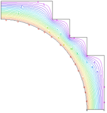

|
axisymmetric_heat |

  
|
|
axisymmetric_heat |
|
{ AXISYMMETRIC_HEAT.PDE
This example demonstrates axi-symmetric heatflow.
The heat flow equation in any coordinate system is div(K*grad(T)) + Source = 0.
The following problem is taken from Zienkiewicz, "The Finite Element Method in Engineering Science", p. 306 (where the solution is plotted, but no dimensions are given). It describes the flow of heat in a spherical vessel. The outer boundary is held at Temp=0, while the inner boundary is held at Temp=100.
}
title "Axi-symmetric Heatflow "
|
 |
coordinates
ycylinder("R","Z") { select a cylindrical coordinate system, with
the rotational axis along the "Y" direction
and the coordinates named "R" and "Z" }
variables
Temp { Define Temp as the system variable }
definitions
K = 1 { define the conductivity }
source = 0 { define the source (this problem doesn't have one) }
Initial values
Temp = 0 { unimportant in linear steady-state problems }
equations { define the heatflow equation: }
Temp : div(K*grad(Temp)) + Source = 0
boundaries { define the problem domain }
Region 1 { ... only one region }
start(5,0)
natural(Temp)=0 { define the bottom symmetry boundary condition }
line to (6,0)
value(Temp)=0 { fixed Temp=0 in outer boundary }
line to (6,3) { walk the funny stair-step outer boundary }
to (5,3)
to (5,4)
to (4,4)
to (4,5)
to (3,5)
to (3,6)
to (0,6)
natural(Temp)= 0 { define the left symmetry boundary }
line to (0,5)
value(Temp)=100 { define the fixed inner temperature }
arc( center=0,0) to close { walk an arc to the starting point }
monitors
contour(Temp) { show contour plots of solution in progress }
plots { write these hardcopy files at completion }
contour(Temp) { show solution }
surface(Temp)
vector(-2*pi*r*K*grad(Temp)) as "Heat Flow"
end
Page url: index.html?applications_heatflow_axisymmetric_heat.html